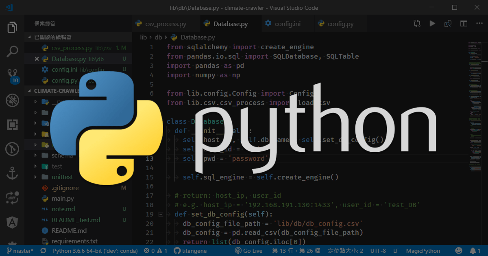

<!DOCTYPE html><html><head><meta name="generator" content="Hexo 3.8.0"><meta charset="utf-8"><title>Python - 日誌 (logging) 模組 | Titangene Blog</title><meta name="description" content="利用 blog 紀錄學習歷程"><meta http-equiv="X-UA-Compatible" content="IE=edge"><meta name="viewport" content="width=device-width,initial-scale=1,maximum-scale=1"><meta name="HandheldFriendly" content="True"><meta name="apple-mobile-web-app-capable" content="yes"><meta name="author" content="Titangene"><link rel="shortcut icon" href="/favicon.ico"><link rel="alternate" href="/atom.xml" title="Titangene Blog"><meta name="description" content="開發 Python 時，很常使用 print() 來輸出變數以方便 debug，但要部署時，不需要這些訊息，需要自己手動去註解或刪除那些放在各處的 print()。而 Python 內建提供了 logging 模組可以用來取代 print()，logging 除了可以輸出訊息，也可以將訊息儲存至日誌檔保存。下面紀錄如何使用 logging 模組。"><meta name="keywords" content="Python,Logging"><meta property="og:type" content="article"><meta property="og:title" content="Python - 日誌 (logging) 模組"><meta property="og:url" content="https://titangene.github.io/article/python-logging.html"><meta property="og:site_name" content="Titangene Blog"><meta property="og:description" content="開發 Python 時，很常使用 print() 來輸出變數以方便 debug，但要部署時，不需要這些訊息，需要自己手動去註解或刪除那些放在各處的 print()。而 Python 內建提供了 logging 模組可以用來取代 print()，logging 除了可以輸出訊息，也可以將訊息儲存至日誌檔保存。下面紀錄如何使用 logging 模組。"><meta property="og:locale" content="zh-tw"><meta property="og:image" content="https://titangene.github.io/images/cover/python.png"><meta property="og:updated_time" content="2019-02-07T11:20:51.642Z"><meta name="twitter:card" content="summary_large_image"><meta name="twitter:title" content="Python - 日誌 (logging) 模組"><meta name="twitter:description" content="開發 Python 時，很常使用 print() 來輸出變數以方便 debug，但要部署時，不需要這些訊息，需要自己手動去註解或刪除那些放在各處的 print()。而 Python 內建提供了 logging 模組可以用來取代 print()，logging 除了可以輸出訊息，也可以將訊息儲存至日誌檔保存。下面紀錄如何使用 logging 模組。"><meta name="twitter:image" content="https://titangene.github.io/images/cover/python.png"><meta name="twitter:creator" content="@titangeneTW"><meta name="twitter:site" content="@titangene_blog"><meta property="fb:admins" content="100001106016019"><meta property="fb:app_id" content="2470546159839111"><meta property="og:image:width" content="1200"><meta property="og:image:height" content="630"><link rel="stylesheet" href="//fonts.googleapis.com/css?family=Inconsolata|Titillium+Web"><link rel="stylesheet" href="//use.fontawesome.com/releases/v5.7.0/css/all.css" integrity="sha384-lZN37f5QGtY3VHgisS14W3ExzMWZxybE1SJSEsQp9S+oqd12jhcu+A56Ebc1zFSJ" crossorigin="anonymous"><link rel="stylesheet" href="/style.css"><script async src="https://www.googletagmanager.com/gtag/js?id=UA-129758206-1"></script><script>!function(a){function n(){dataLayer.push(arguments)}a.dataLayer=a.dataLayer||[],n("js",new Date),n("config","UA-129758206-1")}(window)</script><script>function setLoadingBarProgress(e){document.getElementById("loading-bar").style.width=e+"%"}</script></head></html><body><div id="loading-bar-wrapper"><div id="loading-bar"></div></div><script>setLoadingBarProgress(20)</script><header class="l_header"><div class="wrapper"><div class="nav-main container container--flex"><a class="logo flat-box" href="/">Titangene Blog</a><div class="menu"><ul class="h-list"><li><a class="flat-box nav-home" href="/">Home</a></li><li><a class="flat-box nav-archives" href="/archives">Archives</a></li></ul><div class="underline"></div></div><div class="m_search"><form name="searchform" class="form u-search-form"><input type="text" class="input u-search-input" placeholder="Search"> <i class="fas fa-search"></i></form></div><ul class="switcher h-list"><li class="s-search"><a class="fas fa-search" href="javascript:void(0)"></a></li><li class="s-menu"><a class="fas fa-bars" href="javascript:void(0)"></a></li></ul></div><div class="nav-sub container container--flex"><a class="logo flat-box" href="/">Titangene Blog</a><ul class="switcher h-list"><li class="s-comment"><a class="far fa-comment-alt" href="javascript:void(0)"></a></li><li class="s-top"><a class="fas fa-arrow-up" href="javascript:void(0)"></a></li><li class="s-toc"><a class="fas fa-list-ol" href="javascript:void(0)"></a></li></ul></div></div></header><aside class="menu-phone"><nav><a href="/" class="nav-home nav">Home </a><a href="/archives" class="nav-archives nav">Archives</a></nav></aside><script>setLoadingBarProgress(40)</script><div class="l_body"><div class="container clearfix"><div class="l_main"><article id="post-python-logging" class="post white-box article-type-post" itemscope itemprop="blogPost"><section class="meta"><h2 class="title"><a href="/article/python-logging.html">Python - 日誌 (logging) 模組</a></h2><span class="post-time"><span class="post-meta-item-icon"><i class="fa fa-calendar"></i> </span><span class="post-meta-item-text">發表於</span> <time title="建立時間：2018-12-13 18:32:46" itemprop="dateCreated datePublished" datetime="2018-12-13T18:32:46+08:00">2018-12-13 </time><span class="post-meta-divider">|</span> <span class="post-meta-item-icon"><i class="fa fa-calendar-check"></i> </span><span class="post-meta-item-text">更新於</span> <time title="修改時間：2019-02-07 19:20:51" itemprop="dateModified" datetime="2019-02-07T19:20:51+08:00">2019-02-07</time></span> <span class="comments-count"><span class="post-meta-divider">|</span> <span class="post-meta-item-icon"><i class="fas fa-comment"></i> </span><a href="https://titangene.github.io/article/python-logging.html#disqus_thread" class="article-comment-count" data-disqus-identifier="article/python-logging.html" itemprop="discussionUrl"></a></span><div class="post-category"><span class="post-meta-item-icon"><i class="fa fa-folder"></i> </span><span class="post-meta-item-text">分類於</span> <span itemprop="about" itemscope itemtype="http://schema.org/Thing"><a href="/categories/python/" itemprop="url" rel="index"><span itemprop="name">Python</span></a></span></div></section><section class="toc-wrapper"><ol class="toc"><li class="toc-item toc-level-2"><a class="toc-link" href="#載入-logging-模組"><span class="toc-text">載入 logging 模組</span></a></li><li class="toc-item toc-level-2"><a class="toc-link" href="#logging-等級"><span class="toc-text">logging 等級</span></a></li><li class="toc-item toc-level-2"><a class="toc-link" href="#輸出-logging"><span class="toc-text">輸出 logging</span></a></li><li class="toc-item toc-level-2"><a class="toc-link" href="#紀錄堆疊追蹤資訊"><span class="toc-text">紀錄堆疊追蹤資訊</span></a></li><li class="toc-item toc-level-2"><a class="toc-link" href="#自訂-logging-輸出格式"><span class="toc-text">自訂 logging 輸出格式</span></a><ol class="toc-child"><li class="toc-item toc-level-3"><a class="toc-link" href="#自訂輸出的時間格式"><span class="toc-text">自訂輸出的時間格式</span></a></li></ol></li><li class="toc-item toc-level-2"><a class="toc-link" href="#儲存-logging"><span class="toc-text">儲存 logging</span></a></li></ol></section><section class="article typo"><div class="article-entry" itemprop="articleBody"><p></p><p>開發 Python 時，很常使用 <code>print()</code> 來輸出變數以方便 debug，但要部署時，不需要這些訊息，需要自己手動去註解或刪除那些放在各處的 <code>print()</code>。而 Python 內建提供了 <code>logging</code> 模組可以用來取代 <code>print()</code>，<code>logging</code> 除了可以輸出訊息，也可以將訊息儲存至日誌檔保存。下面紀錄如何使用 <code>logging</code> 模組。</p><a id="more"></a><h2 id="載入-logging-模組"><a class="header-anchor" href="#載入-logging-模組"></a>載入 logging 模組</h2><figure class="highlight python"><table><tr><td class="gutter"><pre><span class="line">1</span><br></pre></td><td class="code"><pre><code class="hljs python"><span class="hljs-keyword">import</span> logging<br></code></pre></td></tr></table></figure><h2 id="logging-等級"><a class="header-anchor" href="#logging-等級"></a>logging 等級</h2><p><code>logging</code> 模組預先定義了 6 種等級以及對應的 log 輸出函數 (除了 <code>logging.NOTSET</code> 沒有對應的輸出函數)：</p><table><thead><tr><th>等級</th><th>等級數值</th><th>輸出函數</th><th>說明</th></tr></thead><tbody><tr><td>NOTSET</td><td>0</td><td>無對應的輸出函數</td><td>未設定</td></tr><tr><td>DEBUG</td><td>10</td><td><code>logging.debug()</code></td><td>除錯</td></tr><tr><td>INFO</td><td>20</td><td><code>logging.info()</code></td><td>訊息</td></tr><tr><td>WARNING</td><td>30</td><td><code>logging.warning()</code></td><td>警告</td></tr><tr><td>ERROR</td><td>40</td><td><code>logging.error()</code></td><td>錯誤</td></tr><tr><td>CRITICAL</td><td>50</td><td><code>logging.critical()</code></td><td>嚴重錯誤</td></tr></tbody></table><p>若要查詢各等級的數值，可直接呼叫該等級：</p><figure class="highlight python"><table><tr><td class="gutter"><pre><span class="line">1</span><br><span class="line">2</span><br><span class="line">3</span><br><span class="line">4</span><br><span class="line">5</span><br><span class="line">6</span><br><span class="line">7</span><br><span class="line">8</span><br></pre></td><td class="code"><pre><code class="hljs python"><span class="hljs-keyword">import</span> logging<br><br>print(logging.NOTSET)   <span class="hljs-comment"># 0</span><br>print(logging.DEBUG)    <span class="hljs-comment"># 10</span><br>print(logging.INFO)     <span class="hljs-comment"># 20</span><br>print(logging.WARNING)  <span class="hljs-comment"># 30</span><br>print(logging.ERROR)    <span class="hljs-comment"># 40</span><br>print(logging.CRITICAL) <span class="hljs-comment"># 50</span><br></code></pre></td></tr></table></figure><p>若要用等級數值來查詢是哪個等級的訊息，可使用 <code>logging.getLevelName(level)</code>：</p><figure class="highlight python"><table><tr><td class="gutter"><pre><span class="line">1</span><br><span class="line">2</span><br><span class="line">3</span><br><span class="line">4</span><br><span class="line">5</span><br><span class="line">6</span><br><span class="line">7</span><br><span class="line">8</span><br></pre></td><td class="code"><pre><code class="hljs python"><span class="hljs-keyword">import</span> logging<br><br>print(logging.getLevelName(<span class="hljs-number">0</span>))    <span class="hljs-comment"># NOTSET</span><br>print(logging.getLevelName(<span class="hljs-number">10</span>))   <span class="hljs-comment"># DEBUG</span><br>print(logging.getLevelName(<span class="hljs-number">20</span>))   <span class="hljs-comment"># INFO</span><br>print(logging.getLevelName(<span class="hljs-number">30</span>))   <span class="hljs-comment"># WARNING</span><br>print(logging.getLevelName(<span class="hljs-number">40</span>))   <span class="hljs-comment"># ERROR</span><br>print(logging.getLevelName(<span class="hljs-number">50</span>))   <span class="hljs-comment"># CRITICAL</span><br></code></pre></td></tr></table></figure><h2 id="輸出-logging"><a class="header-anchor" href="#輸出-logging"></a>輸出 logging</h2><p><code>logging</code> 模組預設等級為 <code>WARNING</code>，大於或等於 <code>WARNING</code> 等級的訊息才會被記錄：</p><figure class="highlight python"><table><tr><td class="gutter"><pre><span class="line">1</span><br><span class="line">2</span><br><span class="line">3</span><br><span class="line">4</span><br><span class="line">5</span><br><span class="line">6</span><br><span class="line">7</span><br></pre></td><td class="code"><pre><code class="hljs python"><span class="hljs-keyword">import</span> logging<br><br>logging.debug(<span class="hljs-string">'debug message'</span>)<br>logging.info(<span class="hljs-string">'info message'</span>)<br>logging.warning(<span class="hljs-string">'warning message'</span>)<br>logging.error(<span class="hljs-string">'error message'</span>)<br>logging.critical(<span class="hljs-string">'critical message'</span>)<br></code></pre></td></tr></table></figure><p>下面是輸出結果，可以看到比 <code>WARNING</code> 等級還要低的訊息有 <code>DEBUG</code> 和 <code>INFO</code> 就不會被輸出：</p><figure class="highlight shell"><table><tr><td class="gutter"><pre><span class="line">1</span><br><span class="line">2</span><br><span class="line">3</span><br></pre></td><td class="code"><pre><code class="hljs shell">WARNING:root:warning message<br>ERROR:root:error message<br>CRITICAL:root:critical message<br></code></pre></td></tr></table></figure><p>若將等級設為 <code>DEBUG</code>，就會將所有等級的訊息都輸出：</p><figure class="highlight python"><table><tr><td class="gutter"><pre><span class="line">1</span><br><span class="line">2</span><br><span class="line">3</span><br><span class="line">4</span><br><span class="line">5</span><br><span class="line">6</span><br><span class="line">7</span><br><span class="line">8</span><br><span class="line">9</span><br></pre></td><td class="code"><pre><code class="hljs python"><span class="hljs-keyword">import</span> logging<br><br>logging.basicConfig(level=logging.DEBUG)<br><br>logging.debug(<span class="hljs-string">'debug message'</span>)<br>logging.info(<span class="hljs-string">'info message'</span>)<br>logging.warning(<span class="hljs-string">'warning message'</span>)<br>logging.error(<span class="hljs-string">'error message'</span>)<br>logging.critical(<span class="hljs-string">'critical message'</span>)<br></code></pre></td></tr></table></figure><p>下面是輸出結果，預設的訊息輸出格式是 <code>%(levelname)s:%(name)s:%(message)s</code> (後面會介紹如何自訂輸出格式)：</p><figure class="highlight shell"><table><tr><td class="gutter"><pre><span class="line">1</span><br><span class="line">2</span><br><span class="line">3</span><br><span class="line">4</span><br><span class="line">5</span><br></pre></td><td class="code"><pre><code class="hljs shell">DEBUG:root:debug message<br>INFO:root:info message<br>WARNING:root:warning message<br>ERROR:root:error message<br>CRITICAL:root:critical message<br></code></pre></td></tr></table></figure><h2 id="紀錄堆疊追蹤資訊"><a class="header-anchor" href="#紀錄堆疊追蹤資訊"></a>紀錄堆疊追蹤資訊</h2><p><code>logging</code> 模組也提供可以紀錄完整的堆疊追蹤 (stack traces)，若在 <code>logging.error()</code> 加上 <code>exc_info</code> 參數，並將該參數設為 <code>True</code>，就可以紀錄 Exception，如下：</p><figure class="highlight python"><table><tr><td class="gutter"><pre><span class="line">1</span><br><span class="line">2</span><br><span class="line">3</span><br><span class="line">4</span><br><span class="line">5</span><br><span class="line">6</span><br></pre></td><td class="code"><pre><code class="hljs python"><span class="hljs-keyword">import</span> logging<br><br><span class="hljs-keyword">try</span>:<br>    x = <span class="hljs-number">5</span> / <span class="hljs-number">0</span><br><span class="hljs-keyword">except</span>:<br>    logging.error(<span class="hljs-string">"Catch an exception."</span>, exc_info=<span class="hljs-keyword">True</span>)<br></code></pre></td></tr></table></figure><p>下面是輸出結果：</p><figure class="highlight shell"><table><tr><td class="gutter"><pre><span class="line">1</span><br><span class="line">2</span><br><span class="line">3</span><br><span class="line">4</span><br><span class="line">5</span><br></pre></td><td class="code"><pre><code class="hljs shell">ERROR:root:Catch an exception.<br>Traceback (most recent call last):<br>  File "main.py", line 14, in &lt;module&gt;<br>    x = 5 / 0<br>ZeroDivisionError: division by zero<br></code></pre></td></tr></table></figure><p>若沒有加上 <code>exc_info=True</code> 則無法紀錄 Exception：</p><figure class="highlight python"><table><tr><td class="gutter"><pre><span class="line">1</span><br><span class="line">2</span><br><span class="line">3</span><br><span class="line">4</span><br><span class="line">5</span><br><span class="line">6</span><br></pre></td><td class="code"><pre><code class="hljs python"><span class="hljs-keyword">import</span> logging<br><br><span class="hljs-keyword">try</span>:<br>    x = <span class="hljs-number">5</span> / <span class="hljs-number">0</span><br><span class="hljs-keyword">except</span>:<br>    logging.error(<span class="hljs-string">"Catch an exception."</span>)<br></code></pre></td></tr></table></figure><p>下面是輸出結果：</p><figure class="highlight shell"><table><tr><td class="gutter"><pre><span class="line">1</span><br></pre></td><td class="code"><pre><code class="hljs shell">ERROR:root:Catch an exception.<br></code></pre></td></tr></table></figure><p>若要在 logging 內紀錄 exception 訊息，可使用 <code>logging.exception()</code>，它會將 exception 添加至訊息中，此方法的等級為 <code>ERROR</code>，也就是說 <code>logging.exception()</code> 就等同於 <code>logging.error(exc_info=True)</code></p><figure class="highlight python"><table><tr><td class="gutter"><pre><span class="line">1</span><br><span class="line">2</span><br><span class="line">3</span><br><span class="line">4</span><br><span class="line">5</span><br><span class="line">6</span><br></pre></td><td class="code"><pre><code class="hljs python"><span class="hljs-keyword">import</span> logging<br><br><span class="hljs-keyword">try</span>:<br>    x = <span class="hljs-number">5</span> / <span class="hljs-number">0</span><br><span class="hljs-keyword">except</span>:<br>    logging.exception(<span class="hljs-string">'Catch an exception.'</span>)<br></code></pre></td></tr></table></figure><p>輸出結果和 <code>logging.error(exc_info=True)</code> 相同：</p><figure class="highlight shell"><table><tr><td class="gutter"><pre><span class="line">1</span><br><span class="line">2</span><br><span class="line">3</span><br><span class="line">4</span><br><span class="line">5</span><br></pre></td><td class="code"><pre><code class="hljs shell">ERROR:root:Catch an exception.<br>Traceback (most recent call last):<br>  File "main.py", line 14, in &lt;module&gt;<br>    x = 5 / 0<br>ZeroDivisionError: division by zero<br></code></pre></td></tr></table></figure><p>若不想使用 <code>ERROR</code> 級別紀錄 exception 訊息，可使用 <code>DEBUG</code>、<code>INFO</code>、<code>WARNING</code>、<code>CRITICAL</code> 級別並加上參數 <code>exc_info=True</code> 的設定：</p><figure class="highlight python"><table><tr><td class="gutter"><pre><span class="line">1</span><br><span class="line">2</span><br><span class="line">3</span><br><span class="line">4</span><br><span class="line">5</span><br><span class="line">6</span><br><span class="line">7</span><br><span class="line">8</span><br><span class="line">9</span><br><span class="line">10</span><br><span class="line">11</span><br></pre></td><td class="code"><pre><code class="hljs python"><span class="hljs-keyword">import</span> logging<br><br>logging.basicConfig(level=logging.DEBUG)<br><br><span class="hljs-keyword">try</span>:<br>    x = <span class="hljs-number">5</span> / <span class="hljs-number">0</span><br><span class="hljs-keyword">except</span>:<br>    logging.debug(<span class="hljs-string">'Catch an exception.'</span>, exc_info=<span class="hljs-keyword">True</span>)<br>    logging.info(<span class="hljs-string">'Catch an exception.'</span>, exc_info=<span class="hljs-keyword">True</span>)<br>    logging.warning(<span class="hljs-string">'Catch an exception.'</span>, exc_info=<span class="hljs-keyword">True</span>)<br>    logging.critical(<span class="hljs-string">'Catch an exception.'</span>, exc_info=<span class="hljs-keyword">True</span>)<br></code></pre></td></tr></table></figure><p>下面是輸出結果：</p><figure class="highlight shell"><table><tr><td class="gutter"><pre><span class="line">1</span><br><span class="line">2</span><br><span class="line">3</span><br><span class="line">4</span><br><span class="line">5</span><br><span class="line">6</span><br><span class="line">7</span><br><span class="line">8</span><br><span class="line">9</span><br><span class="line">10</span><br><span class="line">11</span><br><span class="line">12</span><br><span class="line">13</span><br><span class="line">14</span><br><span class="line">15</span><br><span class="line">16</span><br><span class="line">17</span><br><span class="line">18</span><br><span class="line">19</span><br><span class="line">20</span><br></pre></td><td class="code"><pre><code class="hljs shell">DEBUG:root:Catch an exception.<br>Traceback (most recent call last):<br>  File "main.py", line 14, in &lt;module&gt;<br>    x = 5 / 0<br>ZeroDivisionError: division by zero<br>INFO:root:Catch an exception.<br>Traceback (most recent call last):<br>  File "main.py", line 14, in &lt;module&gt;<br>    x = 5 / 0<br>ZeroDivisionError: division by zero<br>WARNING:root:Catch an exception.<br>Traceback (most recent call last):<br>  File "main.py", line 14, in &lt;module&gt;<br>    x = 5 / 0<br>ZeroDivisionError: division by zero<br>CRITICAL:root:Catch an exception.<br>Traceback (most recent call last):<br>  File "main.py", line 14, in &lt;module&gt;<br>    x = 5 / 0<br>ZeroDivisionError: division by zero<br></code></pre></td></tr></table></figure><h2 id="自訂-logging-輸出格式"><a class="header-anchor" href="#自訂-logging-輸出格式"></a>自訂 logging 輸出格式</h2><p>預設的訊息輸出格式只有 <code>levelname</code>、<code>name</code>、<code>message</code>，下面是其他相關的資訊：</p><table><thead><tr><th>格式化字串</th><th>說明</th></tr></thead><tbody><tr><td><code>%(asctime)s</code></td><td>日期時間, 格式為 <code>YYYY-MM-DD HH:mm:SS,ms</code>，例如：2018-12-13 17:20:30,567</td></tr><tr><td><code>%(filename)s</code></td><td>模組檔名</td></tr><tr><td><code>%(funcName)s</code></td><td>函數名稱</td></tr><tr><td><code>%(levelname)s</code></td><td>日誌的等級名稱</td></tr><tr><td><code>%(levelno)s</code></td><td>日誌的等級數值</td></tr><tr><td><code>%(lineno)d</code></td><td>呼叫日誌函數所在的行數</td></tr><tr><td><code>%(message)s</code></td><td>訊息</td></tr><tr><td><code>%(module)s</code></td><td>模組名稱</td></tr><tr><td><code>%(name)s</code></td><td>logger 的名稱</td></tr><tr><td><code>%(pathname)s</code></td><td>檔案的完整路徑 (如果可用)</td></tr><tr><td><code>%(process)d</code></td><td>process ID (如果可用)</td></tr><tr><td><code>%(thread)d</code></td><td>執行緒 ID (如果可用)</td></tr><tr><td><code>%(threradName)s</code></td><td>執行緒名稱</td></tr></tbody></table><p>可將這些資訊加入 <code>logging.basicConfig()</code> 內的 <code>format</code> 參數：</p><figure class="highlight python"><table><tr><td class="gutter"><pre><span class="line">1</span><br><span class="line">2</span><br><span class="line">3</span><br><span class="line">4</span><br><span class="line">5</span><br><span class="line">6</span><br><span class="line">7</span><br><span class="line">8</span><br><span class="line">9</span><br><span class="line">10</span><br></pre></td><td class="code"><pre><code class="hljs python"><span class="hljs-keyword">import</span> logging<br><br>FORMAT = <span class="hljs-string">'%(asctime)s %(levelname)s: %(message)s'</span><br>logging.basicConfig(level=logging.DEBUG, format=FORMAT)<br><br>logging.debug(<span class="hljs-string">'debug message'</span>)<br>logging.info(<span class="hljs-string">'info message'</span>)<br>logging.warning(<span class="hljs-string">'warning message'</span>)<br>logging.error(<span class="hljs-string">'error message'</span>)<br>logging.critical(<span class="hljs-string">'critical message'</span>)<br></code></pre></td></tr></table></figure><p>下面是自訂訊息的輸出結果：</p><figure class="highlight shell"><table><tr><td class="gutter"><pre><span class="line">1</span><br><span class="line">2</span><br><span class="line">3</span><br><span class="line">4</span><br><span class="line">5</span><br></pre></td><td class="code"><pre><code class="hljs shell">2018-12-13 17:40:34,604 DEBUG: debug message<br>2018-12-13 17:40:34,604 INFO: info message<br>2018-12-13 17:40:34,604 WARNING: warning message<br>2018-12-13 17:40:34,604 ERROR: error message<br>2018-12-13 17:40:34,608 CRITICAL: critical message<br></code></pre></td></tr></table></figure><h3 id="自訂輸出的時間格式"><a class="header-anchor" href="#自訂輸出的時間格式"></a>自訂輸出的時間格式</h3><p>在 <code>logging.basicConfig()</code> 內的 <code>datefmt</code> 參數可設定所需的時間格式，要使用 <code>time.strftime()</code> 接受的時間格式：</p><table><thead><tr><th>參數</th><th>說明</th></tr></thead><tbody><tr><td>%Y</td><td>長年份，例如：2019</td></tr><tr><td>%y</td><td>短年份，例如：19</td></tr><tr><td>%m</td><td>月份：01 ~ 12</td></tr><tr><td>%B</td><td>月份完整名稱，例如：February</td></tr><tr><td>%b</td><td>月份縮寫名稱，例如：Feb</td></tr><tr><td>%d</td><td>日期：01 ~ 31</td></tr><tr><td>%H</td><td>小時 (24 小時制)：00 ~ 23</td></tr><tr><td>%I</td><td>小時 (12 小時制)：01 ~ 12</td></tr><tr><td>%w</td><td>星期：0 ~ 6，0 代表星期日</td></tr><tr><td>%A</td><td>星期完整名稱，例如：Friday</td></tr><tr><td>%a</td><td>星期縮寫名稱，例如：Fri</td></tr><tr><td>%P</td><td>AM 或 PM</td></tr><tr><td>%M</td><td>分鐘：00 ~ 59</td></tr><tr><td>%S</td><td>秒：00 ~ 61</td></tr></tbody></table><blockquote><p><code>time.strftime()</code> 的時間參數詳情可參考 Python 官方的 <a href="https://docs.python.org/3/library/time.html#time.strftime" target="_blank" rel="noopener">time — Time access and conversions — Python 3.7.2 documentation</a> 文件。</p></blockquote><figure class="highlight python"><table><tr><td class="gutter"><pre><span class="line">1</span><br><span class="line">2</span><br><span class="line">3</span><br><span class="line">4</span><br><span class="line">5</span><br><span class="line">6</span><br><span class="line">7</span><br><span class="line">8</span><br><span class="line">9</span><br><span class="line">10</span><br><span class="line">11</span><br></pre></td><td class="code"><pre><code class="hljs python"><span class="hljs-keyword">import</span> logging<br><br>LOGGING_FORMAT = <span class="hljs-string">'%(asctime)s %(levelname)s: %(message)s'</span><br>DATE_FORMAT = <span class="hljs-string">'%Y%m%d %H:%M:%S'</span><br>logging.basicConfig(level=logging.DEBUG, format=LOGGING_FORMAT, datefmt=DATE_FORMAT)<br><br>logging.debug(<span class="hljs-string">'debug message'</span>)<br>logging.info(<span class="hljs-string">'info message'</span>)<br>logging.warning(<span class="hljs-string">'warning message'</span>)<br>logging.error(<span class="hljs-string">'error message'</span>)<br>logging.critical(<span class="hljs-string">'critical message'</span>)<br></code></pre></td></tr></table></figure><p>下面是自訂訊息的輸出結果：</p><figure class="highlight plain"><table><tr><td class="gutter"><pre><span class="line">1</span><br><span class="line">2</span><br><span class="line">3</span><br><span class="line">4</span><br><span class="line">5</span><br></pre></td><td class="code"><pre><code class="hljs log">20190107 08:57:07 DEBUG: debug message<br>20190107 08:57:07 INFO: info message<br>20190107 08:57:07 WARNING: warning message<br>20190107 08:57:07 ERROR: error message<br>20190107 08:57:07 CRITICAL: critical message<br></code></pre></td></tr></table></figure><h2 id="儲存-logging"><a class="header-anchor" href="#儲存-logging"></a>儲存 logging</h2><p>只要在 <code>logging.basicConfig()</code> 內的 <code>filename</code> 參數設定要儲存的日誌檔名，就可以將 logging 儲存：</p><figure class="highlight python"><table><tr><td class="gutter"><pre><span class="line">1</span><br><span class="line">2</span><br><span class="line">3</span><br><span class="line">4</span><br><span class="line">5</span><br><span class="line">6</span><br><span class="line">7</span><br><span class="line">8</span><br><span class="line">9</span><br><span class="line">10</span><br></pre></td><td class="code"><pre><code class="hljs python"><span class="hljs-keyword">import</span> logging<br><br>FORMAT = <span class="hljs-string">'%(asctime)s %(levelname)s: %(message)s'</span><br>logging.basicConfig(level=logging.DEBUG, filename=<span class="hljs-string">'myLog.log'</span>, filemode=<span class="hljs-string">'w'</span>, format=FORMAT)<br><br>logging.debug(<span class="hljs-string">'debug message'</span>)<br>logging.info(<span class="hljs-string">'info message'</span>)<br>logging.warning(<span class="hljs-string">'warning message'</span>)<br>logging.error(<span class="hljs-string">'error message'</span>)<br>logging.critical(<span class="hljs-string">'critical message'</span>)<br></code></pre></td></tr></table></figure><p>預設 <code>filemode</code> 參數是設為 <code>a</code>，代表 append (附加) 的意思，每次執行程式時，Logging 會將新的訊息加在舊的訊息後面，不會覆蓋舊的訊息。若要改成新訊息覆蓋就訊息，那可以將 <code>filemode</code> 參數設為 <code>w</code>，代表 write 的意思。</p><p>下面是剛剛執行後儲存的 <code>myLog.log</code> 日誌檔：</p><figure class="highlight plain"><table><tr><td class="gutter"><pre><span class="line">1</span><br><span class="line">2</span><br><span class="line">3</span><br><span class="line">4</span><br><span class="line">5</span><br></pre></td><td class="code"><pre><code class="hljs log">2018-12-13 17:47:18,686 DEBUG: debug message<br>2018-12-13 17:47:18,687 INFO: info message<br>2018-12-13 17:47:18,687 WARNING: warning message<br>2018-12-13 17:47:18,687 ERROR: error message<br>2018-12-13 17:47:18,687 CRITICAL: critical message<br></code></pre></td></tr></table></figure><blockquote><p>詳情可參考官方文件 <a href="https://docs.python.org/3/library/logging.html" target="_blank" rel="noopener">Logging facility for Python — Python documentation</a>。</p></blockquote></div><div class="article-tags tags"><a href="/tags/python/" title="Python">Python</a> <a href="/tags/logging/" title="Logging">Logging</a></div></section><div class="article-share-links"><span>分享：</span> <a class="fab fa-facebook-f" title="Facebook" target="_blank" href="javascript:window.open('https://www.facebook.com/sharer.php?u=https%3A%2F%2Ftitangene.github.io%2Farticle%2Fpython-logging.html', 'Share on Facebook','width=600, height=600')"></a> <a class="fab fa-twitter" title="Twitter" target="_blank" href="javascript:window.open('https://twitter.com/share?url=https%3A%2F%2Ftitangene.github.io%2Farticle%2Fpython-logging.html&amp;text=Python - 日誌 (logging) 模組&amp;hashtags=Python,Logging&amp;via=titangene_blog', 'Share on Twitter','width=600, height=260')"></a> <a class="fab fa-linkedin-in" title="Linkedin" target="_blank" href="javascript:window.open('https://www.linkedin.com/shareArticle?mini=true&amp;url=https%3A%2F%2Ftitangene.github.io%2Farticle%2Fpython-logging.html&amp;title=Python - 日誌 (logging) 模組', 'Share on Linkedin','width=600, height=600')"></a> <a class="fab fa-facebook-messenger" title="Facebook Messenger" target="_blank" href="javascript:window.open('http://www.facebook.com/dialog/send?app_id=2470546159839111&amp;link=https%3A%2F%2Ftitangene.github.io%2Farticle%2Fpython-logging.html&amp;display=popup&amp;redirect_uri=https%3A%2F%2Fwww.facebook.com%2Fdialog%2Freturn%2Fclose%23_%3D_', 'Send in Messenger','width=600, height=600')"></a> <a class="fab fa-telegram-plane" href="https://telegram.me/share/url?url=https%3A%2F%2Ftitangene.github.io%2Farticle%2Fpython-logging.html&text=Python - 日誌 (logging) 模組" target="_blank"></a></div><nav id="article-nav"><a href="/article/flutter-loading-images.html" id="article-nav-prev" class="article-nav-link-wrap" title="Flutter 載入圖片" rel="prev"><strong class="article-nav-caption">Prev</strong><p class="article-nav-title">Flutter 載入圖片</p><i class="fas fa-angle-left"></i> </a><a href="/article/set-up-windows-task-scheduler-to-periodically-execute-python-crawler.html" id="article-nav-next" class="article-nav-link-wrap" title="設定 Windows 工作排程定期執行 Python 爬蟲程式" rel="next"><strong class="article-nav-caption">Next</strong><p class="article-nav-title">設定 Windows 工作排程定期執行 Python 爬蟲程式</p><i class="fas fa-angle-right"></i></a></nav><section id="list_related_posts"><h2>相關文章</h2><ul class="related-posts"><li class="related-posts-item"><div class="related-posts-content"><h4><a class="related-posts-link" href="/article/set-up-windows-task-scheduler-to-periodically-execute-python-crawler.html">設定 Windows 工作排程定期執行 Python 爬蟲程式</a></h4><div class="related-posts-item-abstract"><p>如何將 Python 爬蟲程式定期執行？使用 Windows 的使用者可以選擇「工作排程器」來解決。</p></div></div></li><li class="related-posts-item"><div class="related-posts-content"><h4><a class="related-posts-link" href="/article/python-crawler-note.html">Python 爬蟲常用技巧 (持續更新)</a></h4><div class="related-posts-item-abstract"><p>紀錄個人常用的 Python 爬蟲技巧，未來還會持續更新其他技巧。</p></div></div></li><li class="related-posts-item"><div class="related-posts-content"><h4><a class="related-posts-link" href="/article/create-a-virtual-environment-and-manage-dependencies-with-conda.html">用 Conda 建立虛擬環境和管理相依套件</a></h4><div class="related-posts-item-abstract"><p>學習如何利用 Conda 來建立不同需求所需的 Python 開發環境，並如何管理相依套件。</p></div></div></li></ul></section><section class="comments" id="comments"><h2>討論區</h2><div id="disqus_thread"><noscript>Please enable JavaScript to view the <a href="https://disqus.com/?ref_noscript">comments powered by Disqus.</a></noscript></div></section></article><script>window.subData={title:"Python - 日誌 (logging) 模組",tools:!0}</script></div><aside class="l_side"><section class="m_widget about"><div class="avatar-section"><style>.avatar-cover{background:url(/images/avatar_cover.jpg) 0 10%/cover no-repeat}</style><div class="avatar-cover"></div></div><div class="header">Titangene</div><div class="content"><div class="desc">利用 blog 紀錄學習歷程</div></div><div class="content"><meta itemprop="url" content="https://titangene.github.io"><div class="social-wrapper"><a itemprop="sameAs" href="https://github.com/titangene" class="social github" target="_blank" rel="external"><span class="fab fa-github-alt"></span> </a><a itemprop="sameAs" href="https://www.facebook.com/titangene.tw" class="social facebook" target="_blank" rel="external"><span class="fab fa-facebook-square"></span> </a><a itemprop="sameAs" href="https://www.instagram.com/titangene/" class="social instagram" target="_blank" rel="external"><span class="fab fa-instagram"></span> </a><a itemprop="sameAs" href="https://www.flickr.com/photos/titangene" class="social flickr" target="_blank" rel="external"><span class="fab fa-flickr"></span> </a><a itemprop="sameAs" href="/atom.xml" class="social rss" target="_blank" rel="external"><span class="fas fa-rss"></span></a></div></div></section><section class="m_widget facebook_page"><div class="fb-page" data-href="https://www.facebook.com/titangene.blog/" data-width="250" data-small-header="false" data-adapt-container-width="false" data-hide-cover="false" data-show-facepile="true"><blockquote cite="https://www.facebook.com/titangene.blog/" class="fb-xfbml-parse-ignore"><p><a href="https://www.facebook.com/titangene.blog/" class="social facebook" target="_blank"><span class="fab fa-facebook-square"></span></a></p><p><a href="https://www.facebook.com/titangene.blog/">Titangene Blog</a></p><p>Loading...</p></blockquote></div></section><section class="m_widget recent"><div class="header">Recents</div><div class="content"><ul class="entry"><li><a itemprop="url" class="flat-box" href="/article/getting-started-with-google-k8s-engine.html"><time>2019-04-19</time><div class="name">Google Kubernetes Engine (GKE) 入門</div></a></li><li><a itemprop="url" class="flat-box" href="/article/getting-started-with-cloud-shell-gcloud-and-gsutil.html"><time>2019-04-17</time><div class="name">Google Cloud Shell 入門：gcloud &amp; gsutil</div></a></li><li><a itemprop="url" class="flat-box" href="/article/gcp-vm-windows-server.html"><time>2019-04-16</time><div class="name">在 GCP 上建立 VM 架設 Windows Server</div></a></li><li><a itemprop="url" class="flat-box" href="/article/getting-started-with-gcp.html"><time>2019-04-15</time><div class="name">GCP (Google Cloud Platform) 入門</div></a></li><li><a itemprop="url" class="flat-box" href="/article/gcp-vm-nignx-web-server.html"><time>2019-04-14</time><div class="name">在 GCP 上建立 VM 架設 NIGNX Web server</div></a></li></ul></div></section></aside><script>setLoadingBarProgress(60)</script></div></div><footer id="footer" class="clearfix"><div class="social-wrapper"><a href="https://github.com/titangene" class="social github" target="_blank" rel="external"><span class="fab fa-github-alt"></span> </a><a href="https://www.facebook.com/titangene.tw" class="social facebook" target="_blank" rel="external"><span class="fab fa-facebook-square"></span> </a><a href="https://www.instagram.com/titangene/" class="social instagram" target="_blank" rel="external"><span class="fab fa-instagram"></span> </a><a href="https://www.flickr.com/photos/titangene" class="social flickr" target="_blank" rel="external"><span class="fab fa-flickr"></span> </a><a href="/atom.xml" class="social rss" target="_blank" rel="external"><span class="fas fa-rss"></span></a></div><div>© 2018 - 2019 <span itemprop="copyrightHolder">Titangene</span></div><div>Powered by <a href="https://hexo.io/" class="codename" rel="external">Hexo</a> - Theme <a href="https://github.com/stkevintan/hexo-theme-material-flow" class="codename" rel="external">MaterialFlow</a></div><div><a rel="license" href="http://creativecommons.org/licenses/by-nc-sa/4.0/"></a></div></footer><script>setLoadingBarProgress(80)</script><script src="//cdnjs.cloudflare.com/ajax/libs/jquery/2.1.4/jquery.min.js"></script><script src="https://cdnjs.cloudflare.com/ajax/libs/moment.js/2.24.0/moment-with-locales.min.js"></script><script>moment.locale("zh-tw")</script><script src="//cdnjs.cloudflare.com/ajax/libs/scrollReveal.js/3.3.2/scrollreveal.min.js"></script><script src="https://cdnjs.cloudflare.com/ajax/libs/clipboard.js/2.0.0/clipboard.min.js"></script><script src="/js/jquery.fitvids.js"></script><script>var SEARCH_SERVICE="hexo",ROOT="/";ROOT.endsWith("/")||(ROOT+="/")</script><script src="/js/search.js"></script><script src="/js/app.js"></script><script src="/js/clipboard-use.js"></script><script>var disqus_shortname="titangene-blog",disqus_config=function(){this.page.url="https://titangene.github.io/article/python-logging.html",this.page.identifier="article/python-logging.html",this.page.title="Python - 日誌 (logging) 模組"};!function(){var t=document.createElement("script");t.async=!0,t.src="//"+disqus_shortname+".disqus.com/embed.js",t.setAttribute("data-timestamp",""+new Date),(document.head||document.body).appendChild(t)}()</script><script id="dsq-count-scr" src="https://titangene-blog.disqus.com/count.js" async></script><div id="fb-root"></div><script>window.fbAsyncInit=function(){FB.init({appId:"2470546159839111",autoLogAppEvents:!0,xfbml:!0,version:"v2.11"}),FB.AppEvents.logPageView()},function(e,n,t){var o,s=e.getElementsByTagName(n)[0];e.getElementById(t)||((o=e.createElement(n)).id=t,o.src="//connect.facebook.net/zh_TW/sdk.js",s.parentNode.insertBefore(o,s))}(document,"script","facebook-jssdk")</script><script>setLoadingBarProgress(100)</script></body>